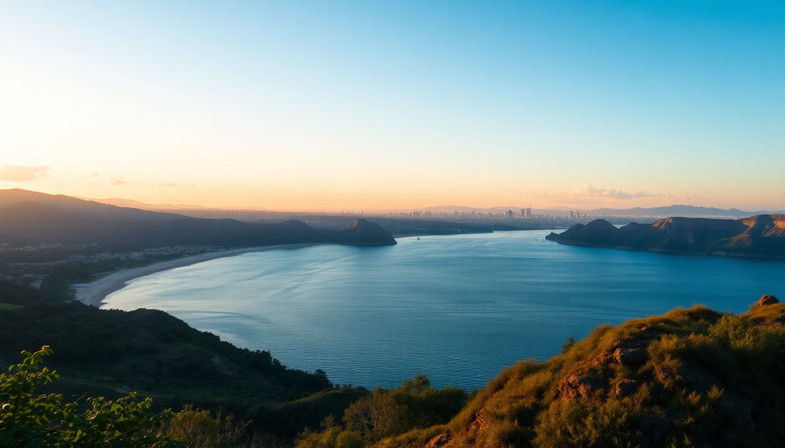

Best Beaches in Peru: Pacific Coast & Amazon River

I spent three weeks bouncing between Lima’s gray cliffs, Mancora’s hot sand, and a weirdly wonderful river beach in the Amazon. Peru doesn’t get enough beach credit—most people head straight for Cusco. But if you want to mix city surf, backpacker parties, and freshwater swimming in the jungle, here’s what actually delivered.
What are the best beaches near Lima for a day trip?
Lima’s coastline is all cliffs and cold, gray Pacific water. You won’t get Caribbean vibes, but the surf is reliable and the ceviche shacks are legit. I based myself in Miraflores and took Ubers south.
- Playa Punta Hermosa — 45 minutes south of Miraflores. Consistent waves for intermediate surfers. The sand is dark, the water is 18°C, and the wind picks up by noon. Rent a board at Tablista Surf Shop right on the beach.
- Playa La Herradura — Sheltered cove in Chorillos. Calmer water, better for swimming. Families camp here on weekends. The Malecón de la Herradura has a string of cevicherías—I ate at El Mirador and got a plate of fresh leche de tigre for 15 soles.
- Playa San Bartolo — Quieter, more residential. Good if you want a long walk without crowds. The Hotel Bungalow San Bartolo is a decent base if you want to stay overnight, but I’d just day-trip.
Skip Playa Agua Dulce in Chorrillos—it’s crowded, trashy, and the water quality is questionable.
Is Mancora worth the hype for beach lovers?
Yes, but manage expectations. Mancora is a party town first, a beach town second. The main strip (Av. Piura) is lined with hostels, reggaeton bars, and pizza joints. The beach itself is wide, warm, and swimmable—water temps hover around 27°C year-round. But it’s not postcard-perfect; there’s seaweed and occasional runoff after rain.
- Playa Mancora (the main beach) — Fine for swimming and sunbathing. The north end near Loki del Mar hostel is loud but social. The south end near La Playa Mancora Hotel is quieter.
- Playa Las Pocitas — 10 minutes north by mototaxi. Calmer, cleaner, fewer people. I spent two afternoons here reading at Arennas Mancora —they let day guests use the pool if you buy lunch. Their pisco sour is strong.
- Playa Los Órganos — 15 minutes south. Smaller, more local. Good for beginner surfing. I rented a board from Surf Point Los Órganos for 30 soles for two hours.
- Máncora Chico — A sandbar that appears at low tide, reachable by boat. You can wade through knee-deep water and eat grilled fish from a temporary shack. Ask at Peña La Sirena for a boatman—cost me 20 soles round trip.
Stay at Hotel Sol y Mar if you want quiet and direct beach access. Skip Cocobongo unless you want techno until 4 AM.
Can you actually swim at an Amazon River beach near Iquitos?
Yes, and it’s nothing like the ocean. During the dry season (June to November), the Amazon drops and reveals sandbars and beaches along the river. The water is brown, warm, and surprisingly clear in spots. I was skeptical, but swimming in the Amazon felt like a giant bathtub.
- Playa de Santa Clara — 30 minutes by motocar from Iquitos. A long sandbar with shallow water. Locals set up grills and sell anticuchos. Go on a Sunday afternoon for the full scene. The current is mild, but don’t swim after heavy rain—visibility drops to zero.
- Playa de Nanay — On the Nanay River, a tributary. Accessible from the Belen floating market area. Take a small boat (lancha) from the dock near Restaurante Fitzcarraldo—10 soles per person. The beach is small but very calm. I saw pink river dolphins about 50 meters offshore.
- Isla de los Monos — Not a beach per se, but a sandbar island with a monkey sanctuary. You wade ashore and walk among rescued spider monkeys. The island’s beach is shallow and good for a quick dip. Tours from Iquitos cost around 60 soles and include the boat ride and guide.
Stay at Hotel El Dorado in Iquitos for central access, or Amazon Muyuna Lodge if you want a full jungle experience with a private riverfront.
What’s the best time of year to visit Peru’s beaches?
It depends on which coast you’re hitting. The Pacific and Amazon have opposite seasons.
- Lima (Pacific) — Best from December to April. The sun comes out, water warms to 22°C, and the famous gray fog (garúa) lifts. May to November is overcast and windy. Surfers don’t care—waves are better in winter (June–August).
- Mancora (Pacific) — Year-round warmth, but the dry season (May to October) brings less cloud cover and calmer seas. December to March is hotter (32°C+) but can have afternoon thunderstorms. Avoid February if you hate crowds—it’s peak Peruvian summer vacation.
- Iquitos (Amazon) — River beaches only exist June to November. December to May is the wet season; the river rises 10 meters and swallows the sandbars. I went in August and had perfect swimming conditions.
What should I pack for a Peru beach trip?
The coast and jungle require different kits. I packed for both and regretted not bringing more sunscreen.
- For Lima — A windbreaker. Even in summer, the breeze off the Humboldt Current is chilly. A 3mm wetsuit if you plan to surf—Tablista Surf Shop rents them for 30 soles.
- For Mancora — Lightweight rash guard (the sun is brutal), reef-safe sunscreen, and a reusable water bottle. The tap water is not drinkable. Buy large bottles at Plaza Vea supermarket on the main strip.
- For Iquitos — Insect repellent with DEET (I used 30%), quick-dry shorts, and water shoes for the river bottom (there are small rocks and sticks). I bought a cheap pair at Mercado de Belén for 15 soles.
- General — A dry bag. I used a 10-liter Sea to Summit for river crossings and boat trips. Also, cash—ATMs in Mancora and Iquitos run out on weekends.
FAQ
Is it safe to swim at beaches in Lima? Generally yes, but avoid swimming near river mouths or after heavy rain—sewage overflow is a real issue. Stick to Punta Hermosa or San Bartolo, which have cleaner water. Check the surf reports for bacteria warnings. I swam at La Herradura without issues, but I didn’t swallow any water.
Do I need a wetsuit for surfing in Mancora? No. Water temperature in Mancora is 25–28°C year-round. A rash guard or board shorts is fine. Lima is the only place where a wetsuit is necessary (18–22°C water). I surfed Mancora in just shorts and felt comfortable.
Can I visit Iquitos river beaches without a tour? Yes. For Playa de Santa Clara, take a motocar from the city center (15 soles). For Playa de Nanay, walk to the Belen dock and negotiate a boat ride. No guide needed. For Isla de los Monos, you’ll need a tour operator because it’s a protected area—I used Amazon Explorer and paid 70 soles for a half-day trip.
Conclusion
- Lima’s beaches are for surfers and day-trippers, not swimmers—base yourself in Miraflores and head south to Punta Hermosa or San Bartolo for the best experience.
- Mancora delivers warm water and a party vibe, but Playa Las Pocitas is where you go to actually relax—skip the main beach on weekends.
- Iquitos river beaches are a unique, seasonal bonus—go in August or September for the best sandbars and dolphin sightings.
- Pack for two climates: windbreaker for Lima, rash guard for Mancora, DEET repellent and water shoes for Iquitos.
- Book accommodation early for February (Peruvian summer) and August (international tourists)—I saw sold-out signs at Hotel Sol y Mar and Arennas Mancora in late July.